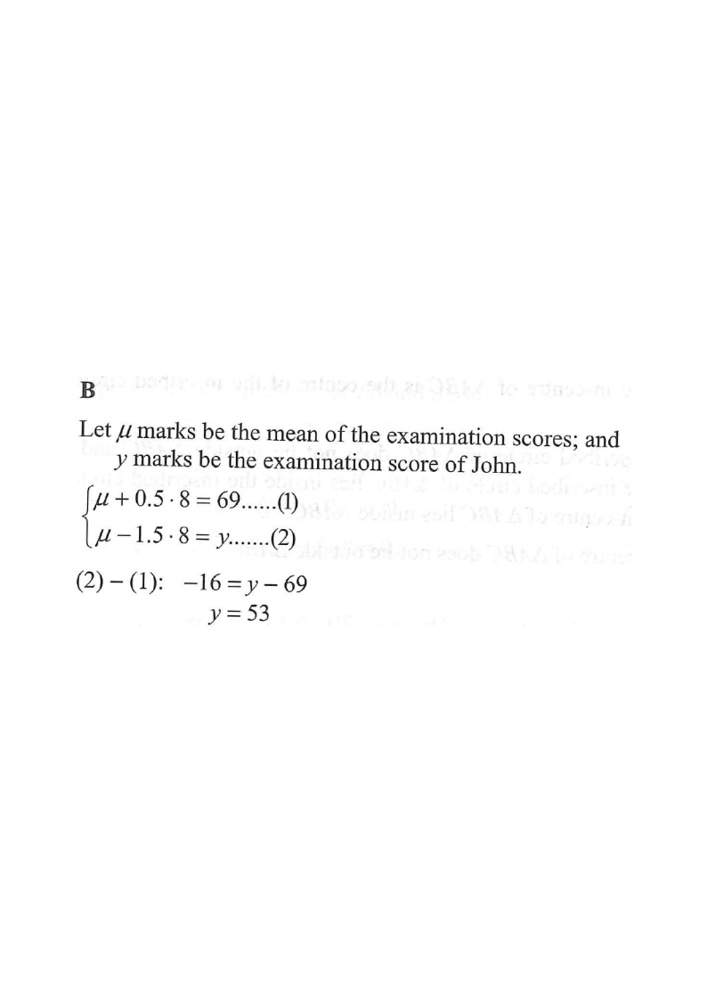

QQuestion
In an examination, the standard deviation of the examination scores is \(8\) marks. The examination score of Mary is \(69\) marks and her standard score is \(0.5\). If the standard score of John in the examination is \(-1.5\), then his examination score is
(2 marks — multiple choice)

1Part (a) — Find the mean μ
Given: σ8 marks
Mary's score x69 marks
Mary's standard score z0.5
Computed: μ65.0
Move the slider to change μ and see which value makes Mary's score 69 correspond to standard score 0.5 (i.e. μ + 0.5×8 = 69).
1
Recall the definition of standard score
For a score \(x\) with mean \(\mu\) and standard deviation \(\sigma\), the standard score is
\[ z = \frac{x-\mu}{\sigma} \]Use Mary's information to write an equation involving \(\mu\).
2
Substitute Mary's values
Mary: \(x=69,\; z=0.5,\; \sigma=8\).
\[ 0.5 = \frac{69-\mu}{8} \] \[ 4 = 69-\mu \] \[ \mu = 65 \]Multiply both sides by 8 first to avoid fractions.
\(\mu = 65\) marks
0 / 2
2Part (b) — Find John's examination score
Mean μ65.0
σ8.0
John's score y53.0
The slider changes John's standard score \(z\). His raw score is \(y = \mu + z\sigma = 65 + 8z\). At \(z = -1.5\), \(y = 65 - 12 = 53\).
1
Apply the standard score formula to John
John: \(z=-1.5,\; \sigma=8,\; \mu=65\) (from part (a)).
\[ -1.5 = \frac{y-65}{8} \]Here \(y\) is John's examination score, the unknown we want.
2
Solve for \(y\)
\[ -1.5 \times 8 = y - 65 \]
\[ -12 = y - 65 \]
\[ y = 53 \]
A negative standard score means the score is below the mean. Check: \(53 < 65\).
John's score \(= 53\) marks (Option B)
0 / 2
3Alternative — Subtract the two equations (as in the marking scheme)
1
Form two equations
From Mary: \(\mu + 0.5 \times 8 = 69 \quad \cdots (1)\)
From John: \(\mu - 1.5 \times 8 = y \quad \cdots (2)\)
2
Eliminate μ by computing (2) − (1)
\[ (\mu - 12) - (\mu + 4) = y - 69 \]
\[ -16 = y - 69 \]
\[ y = 53 \]
This method avoids finding \(\mu\) first — but both give the same answer.
\(y = 53\) marks → Option B
0 / 2
ΣSummary of Answers
- Mean of examination scores: \(\mu = 65\) marks
- Standard deviation: \(\sigma = 8\) marks
- John's standard score: \(z = -1.5\)
- John's examination score: \(y = 65 + (-1.5)(8) = 53\) marks
- Correct option: B. 53 marks